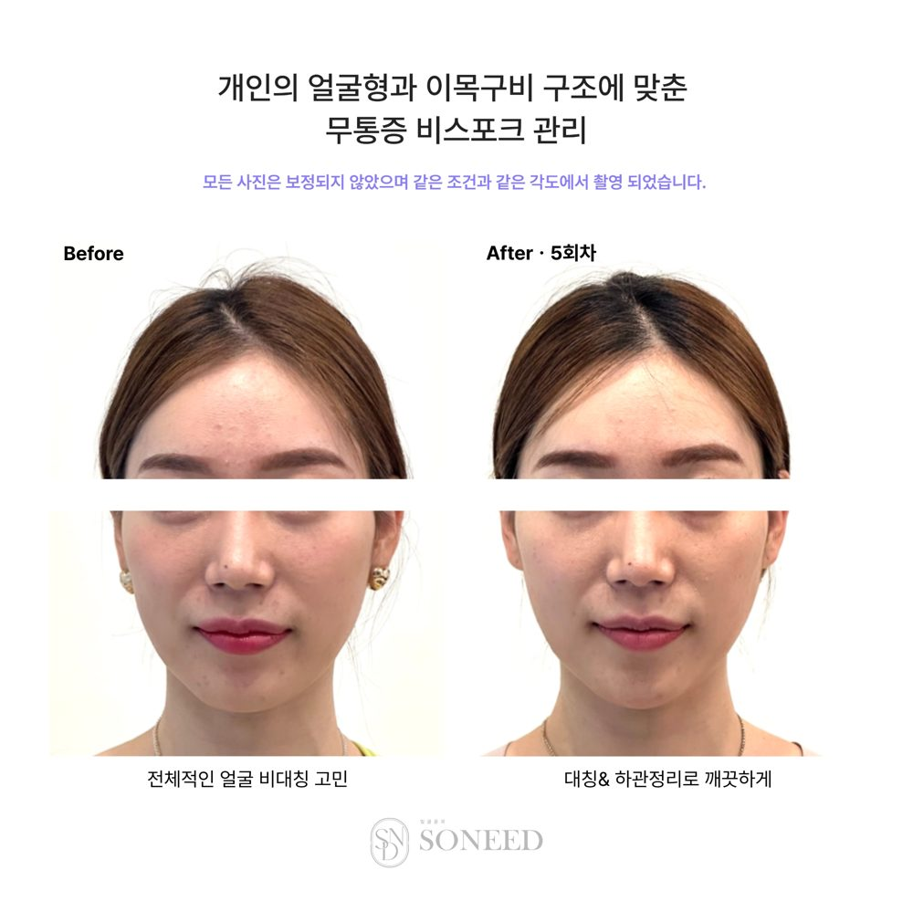
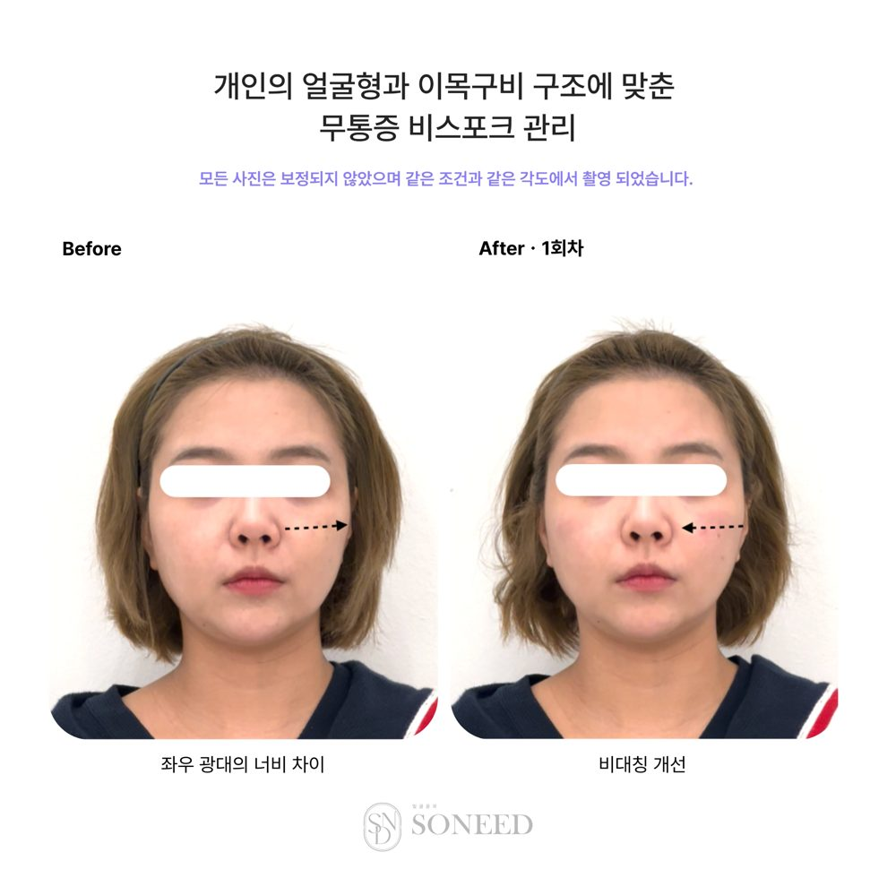
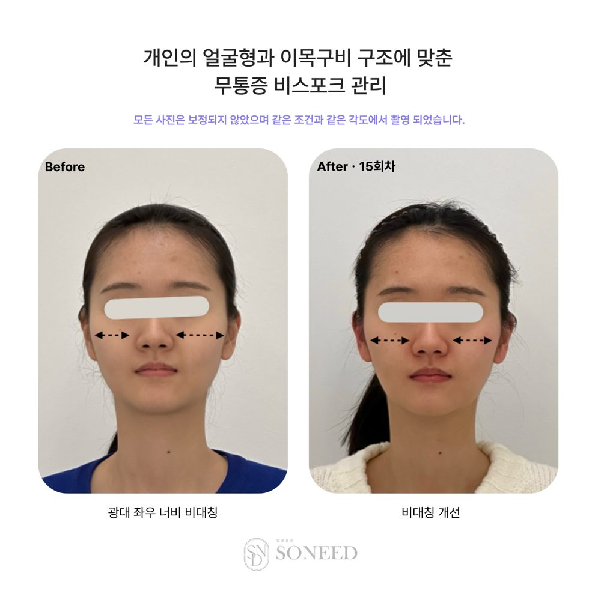
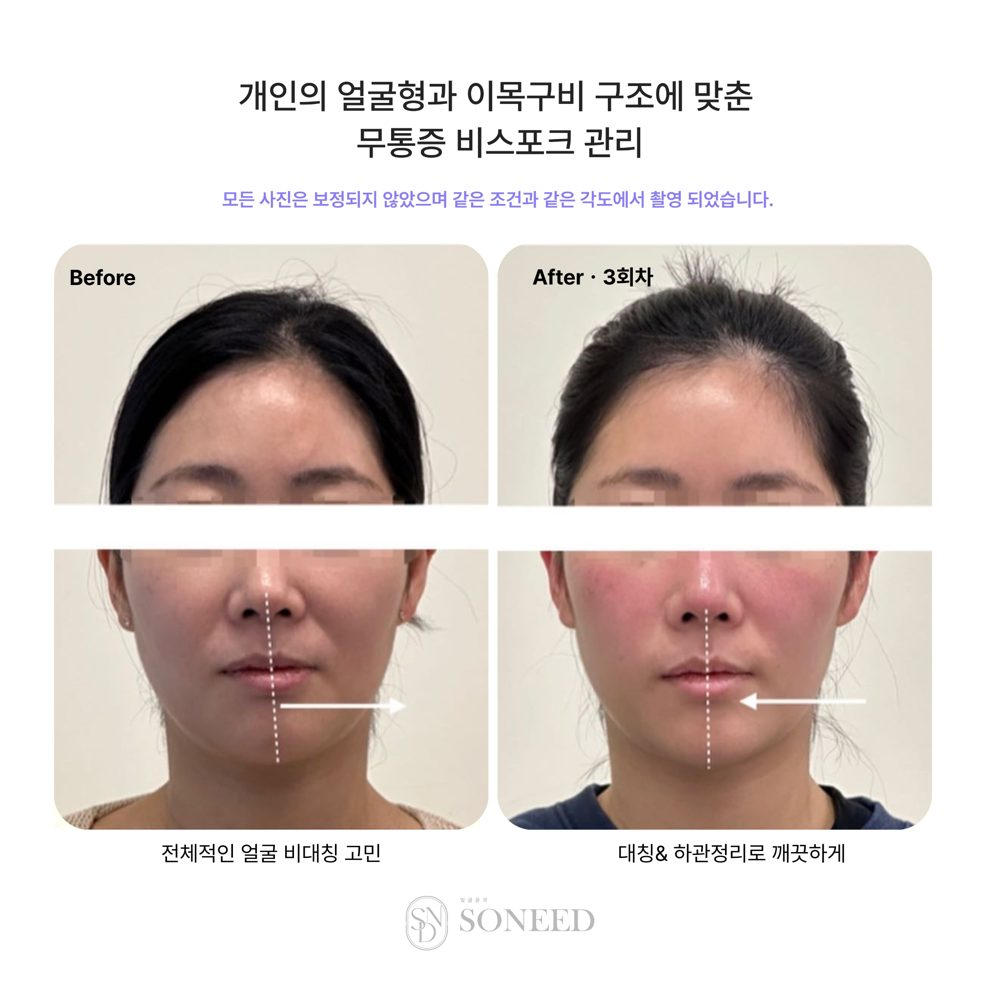
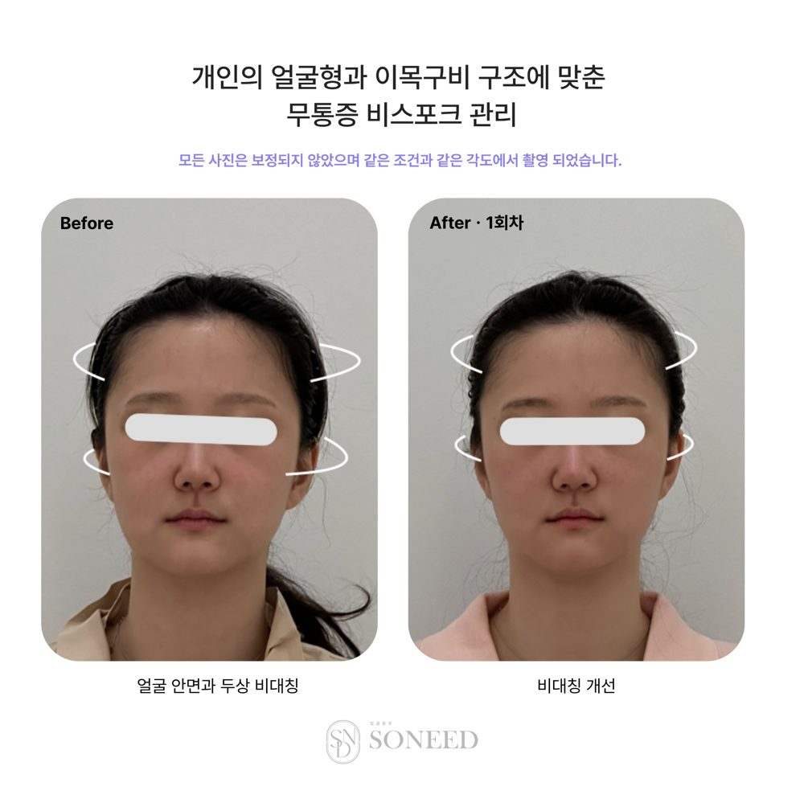
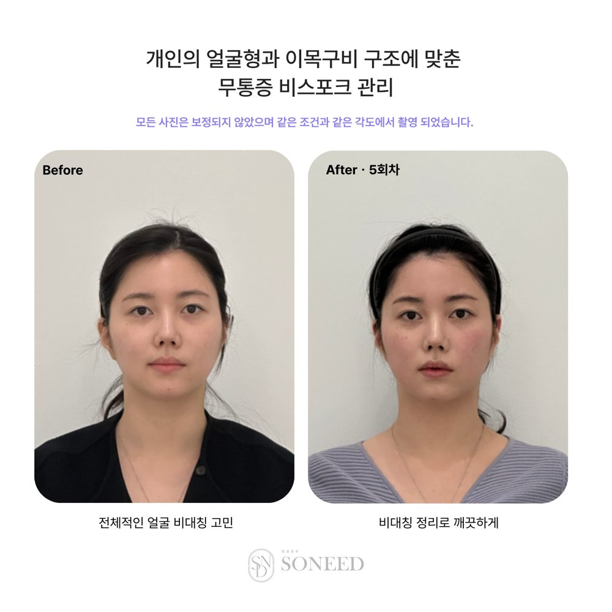
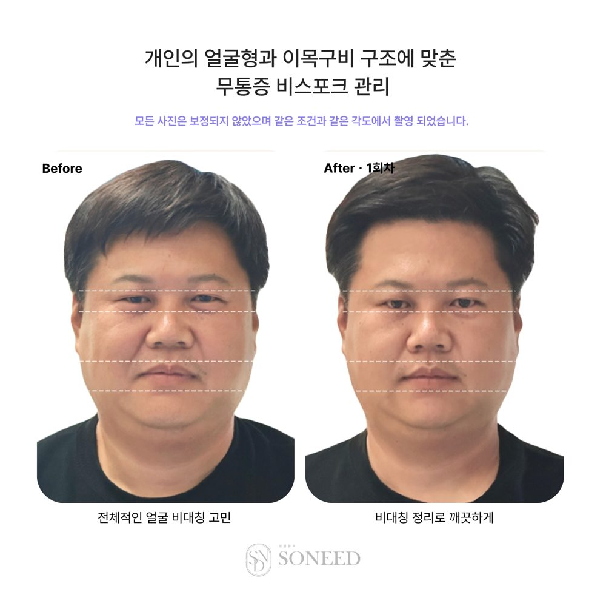
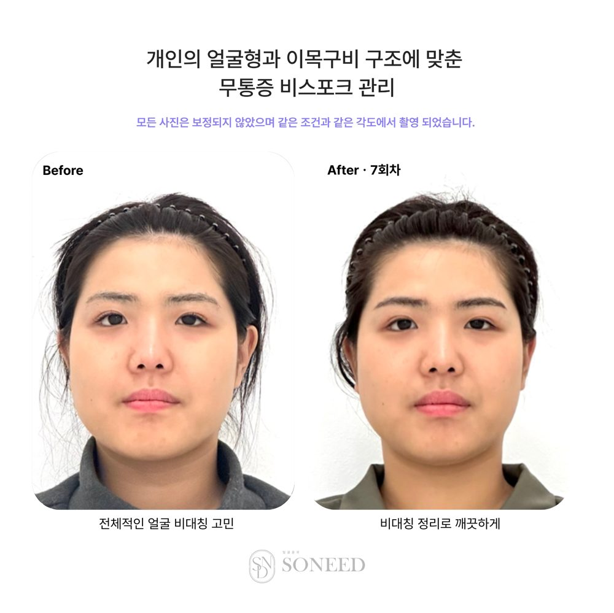

얼굴을 '측정'하는 회사가 아니라, 얼굴 구조를 '읽는 표준'을 만드는 회사. 독자적 3D 구조 진단 체계를 소프트웨어·AI로 이미 구현해 작동 중입니다.
기구·주사·수술이 아니다. 니트릴 장갑을 낀 손으로 얼굴 구조(두개골 회전·후두골 위치·안면 비대칭)를 읽고, 적은 압으로 30분간 '리세팅'해 얼굴 비대칭을 개선하는 건식 기술이다. 피부 표면이 아니라 구조를 다룬다.
보편화된 기술이 아니라, 받아보기 전엔 설명하기 어렵다. 그래서 소니드는 이 기술을 표준·용어·교육으로 체계화하고 있고, 무엇인지 알리기 위해 책을 집필 중이다. — 이 '설명 가능하게 만드는 일' 자체가 진입장벽이자 자산이다.
※ 효과·경험은 개인차가 있을 수 있으며, 의료 행위가 아닌 미용 관리 기술입니다.
시술 현장에서 축적된 실제 전후 사례. 얼굴 비대칭이 손 관리만으로 개선된 결과입니다.








※ 개인차가 있을 수 있는 실제 관리 사례입니다.
“촬영 전에 원장님 만나고 오길 정말 잘했어요.”
— 회원 후기
“애프터 대만족이에요. 남은 회차도 기대돼요.”
— 11회차 재방문 회원
“얼굴 길이가 짧아진 게 확 체감돼요. 가족·지인에게 추천하고 싶은 관리예요.”
— 회원 후기
“가장 크게 달라진 건 기술이 아니라 얼굴을 바라보는 시선이었습니다. 좋은 관리는 좋은 손이 아니라 정확한 분석에서 시작된다는 걸 배웠어요.”
— 8주 과정 수강생
“‘아파야 예뻐진다’는 다른 곳과 달리, 소니드는 거의 아프지 않은데도 변화가 눈으로 확인됩니다. 특히 비대칭에 강합니다.”
— 윤곽관리 수강생
“관리 받고 2기까지 들어, 지금은 두 달간 10명 이상을 관리하는 페이스리세터가 되었습니다.”
— 페이스 리세팅 2기 수강생
관리사마다 진단이 다르니 기록도 다르고, 결과가 데이터로 남지 않는다. 얼굴 '구조 변화'를 표준화해 쌓는 데이터베이스가 사실상 없다. — 우리는 그 표준과 데이터를 만든다.
사진 3장 → 얼굴 랜드마크 자동 측정(기울기·회전·후두골 시간) + AI가 촉진 전 차트 초안 자동 생성.
얼굴을 7자리 코드로 요약 → 코드에서 시술 솔루션을 자동 조립해 카드로 표시.
실제 깊이(z) 기반 회전 + 시술 방향 미리보기 슬라이더.
AI 초안 vs 관리사 확정값 저장 → 항목별 오차율 정량 분석(자체 학습 데이터화).
관리사 계정·등급·기능 잠금·서버 하드락.
무료 셀프 얼굴 밸런스 체험(온디바이스)·동물상·공유카드 → 상담 유입.
레벨1(읽기)·2(코드→솔루션)·3(전체차트·원리) 슬라이드.
로그인·권한(RLS)·데이터 분리 저장.
진짜 병목은 돈이 아니라 도메인 소통이다. 개발자는 이 진단 체계를 모른다 — 전문가와 개발이 붙어 몇 달치를 압축한 상태.
그러나 앱은 '그릇'일 뿐이다. 진짜 자산은 대표의 진단 체계(IP)와 쌓이는 정답 데이터 — 개발비로 살 수 없고, AI 오차추적으로 계속 정밀해지는 중이다.